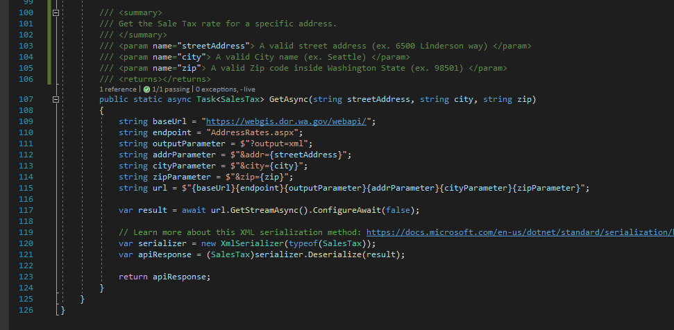

Deserializing XML into Objects in C#
Compared to the simplicity of deserializing JSON, dealing with XML in dotnet core can be confusing and unintuitive. In this case I needed to deserialize the XML response of an HTTP call to an endpoint that the Department of Revenue provides to lookup what percentage of tax should be collected for a given billing address.
Although quite helpful, the documentation provided by the state on how their API worked was last updated in 2011. The example they provide for making a query to this API using a C# client makes a request with the now deprecated WebClient class and ends with this comment as soon as they get to how to parse the XML response:
“ // Now parse the XML …”
¯\_(ツ)_/¯
Start with a Sample
The first thing we need is a sample request and response chain as an example of how to interact with this API. The best way I’ve found to capture this data yourself is by sending a request using a tool like Postman or curl. In this case I am using Postman and I am sending a GET request to the endpoint using an example query that was listed in the API’s documentation.
Now that we’ve captured a complete request and response chain, we can start building out a model of this endpoint in C#.
Paste XML as Classes
Visual Studio 2019 has a wonderful little tool that will generate a set of C# class for us based on our XML. You can use it from the menu bar by clicking “Edit” => “Paste Special” => “Paste XML as Classes”. This will give us a good start as the most difficult part of deserializing XML to C# objects is making sure that the XML and your model match up. If they don’t match, you’ll get deserialization exceptions which are annoying to say the least.
Typically, the generated C# classes will mirror the names of the elements in your XML. Most of the time this is desirable, but sometimes they name the wrapper XML object something silly and generic like “response”. In this case we’ll have to rename it when we deserialize it to a more specifically named type like “SalesTax”. To accomplish this, we can use the XmlRoot attribute as described in this Stackoverflow question.
We can mark our SalesTax class as an XmlRoot with an ElementName of “response”. This hint will allow the deserializer to map the “response” class in our XML body to the SalesTax object in our C# model.
Making A Request
Now that we’ve got our model worked out we need to make the HTTP request to this API so we have a response to deserialize to our model. There are many ways to handle this, but I prefer the Flurl library which you can find on NuGet. Flurl has an intuitive syntax and handles the pooling and reuse of HttpClient objects so you don’t have to.
string baseUrl = "https://webgis.dor.wa.gov/webapi/"; string endpoint = "AddressRates.aspx"; string outputParameter = $"?output=xml";
To use Flurl I am going to start by defining the baseUrl for the API I want to make requests to. In this case it’s the Department of Revenue’s website at “https://webgis.dor.wa.gov/webapi/”. Then I’ll add the route to the specific endpoint that I want to interact with “AddressRates.aspx”.
string addrParameter = $"&addr={streetAddress}"; string cityParameter = $"&city={city}"; string zipParameter = $"&zip={zip}";
Finally, we need to define each of the parameters that this endpoint accepts. Luckily for us this is straightforward as this endpoint’s parameters are all defined as query strings. We can create template strings like $"&addr={streetAddress}" for each of the three parameters “addr”, “city”, and “zip” and then add them as required parameters for our method.
string url = $"{baseUrl}{endpoint}{outputParameter}{addrParameter}{cityParameter}{zipParameter}";
For Flurl to do it job will have combine all these pieces together into a single string.
var result = await url.GetStreamAsync().ConfigureAwait(false);
Now we can execute an asynchronous GET request to this URL and get the response back as a Stream.
var serializer = new XmlSerializer(typeof(SalesTax));
To use the XmlSerializer class we have to create a new instance of this object and pass in the type of object we expect it to serialize our XML to.
var apiResponse = (SalesTax)serializer.Deserialize(result);
Then we can pass it the response Stream, which is the XML response from the API call we made earlier and cast it to the type we’re expecting it to return, in this case our “SalesTax” class. You can learn more about this XML serialization method in Microsoft’s docs.
I prefer to define static methods inside of a class to retrieve data of that type. I like this pattern because it makes it obvious what the return type of the method call will be so you can define it using var for the left hand of the assignment statement without making the return type ambiguous to the reader.
To improve clarity further, I pass in the required data as parameters of this method to make its dependencies explicit. The other upside of this pattern is that you don’t have to recall the implementation details of how you’re getting the data for that type of object. Rather you just need to know what data it will return to you and meet its demands by passing in the parameters.
Thus the complete data access method looks like this:
Test it
To prove this works the way we expect we can write an integration test and print out the values in the resulting SalesTax object to the console. I’m using a separate test project here and the XUnit testing framework.
Now we have proof that our object contains all of the data we were expecting from the XML response.
Deserializing XML into objects in C# is easy enough if you leverage Visual Studio’s “Paste Special” to generate your XML classes, popular libraries like Flurl to make your HTTP requests, and dotnet’s base class library to handle XML parsing.
You can find all of the code discussed in this post here on Github and in production on the Accelerate Network’s website where its being used to calculate the sales tax to collect on new orders.